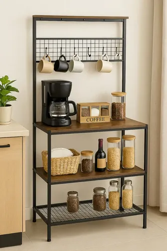

¿Vale la pena invertir en una batería gigante? Reseña del set Latatl 34 piezas

Cuando ves el número "34 piezas" en una caja de batería de cocina, tu primera reacción probablemente sea: "Guau, nunca más tendré que comprar nada". Tu segunda reacción, si tienes una cocina pequeña, debería ser: "¿Dónde rayos voy a guardar todo esto?".
El mercado está inundado de estos mega-sets, y la Batería de Cocina Latatl de 34 Piezas en un llamativo color verde es uno de los contendientes más populares en ventas en línea actualmente. Decidimos desempaquetar este gigante, ponerlo a prueba en estufas reales y analizar de manera honesta si realmente necesitas tener tal arsenal en tus gabinetes o si estarías mejor comprando solo tres ollas de mejor calidad.
Desglosando el mito de las "34 Piezas"
Lo primero que debemos aclarar es la matemática del marketing. Ningún fabricante te está vendiendo 34 ollas gigantes. Este número se alcanza contando cada tapa por separado, juegos de utensilios de silicona (espátulas, pinzas, cucharones), protectores de sartenes y, a veces, hasta esponjas o accesorios de limpieza.
En el caso de Latatl, lo que realmente obtienes en términos de cocción dura son alrededor de 9 recipientes principales (entre sartenes de distintos diámetros, cacerolas y ollas profundas). La gran ventaja de esto es la versatilidad inmediata. Tienes un recipiente exacto para calentar una taza de leche, y otro exacto para hacer sopa para seis personas. Para familias grandes o personas que organizan cenas frecuentemente, esta variedad es un salvavidas absoluto.
¿Te interesa equipar toda tu cocina de una vez?
Ver disponibilidad de la batería LatatlEstética y Funcionalidad: Ese verde tan particular
Hay que hablar del diseño. Rompiendo con el aburrido negro o el genérico plateado, el color verde menta/esmeralda de esta batería le da una vida increíble a la cocina. Si te gusta que tus utensilios también sirvan como elementos decorativos (muy al estilo de cocinas de Pinterest), este set definitivamente suma puntos.
A nivel funcional, el antiadherente cumple. Hicimos la clásica prueba del queso derretido directamente sobre el sartén sin aceite, y al enfriarse, se despegó como una costra limpia. Las tapas de vidrio templado tienen salida de vapor, lo cual evita derrames molestos cuando hierves pasta o arroz.
Sin embargo, encontramos un detalle importante: los mangos con acabado imitación madera. Aunque se ven preciosos y son suaves al tacto, no puedes meter estas ollas al horno. Si eres de los que gusta sellar un corte de carne en la estufa y terminarlo en el horno, tendrás que transferir la comida a otro recipiente.
¿Para quién es realmente este set?
Después de varias semanas de uso, creemos tener claro el perfil de usuario ideal para este producto:
Cómprala si...
- Te acabas de mudar a una casa grande o te vas a casar y partes con la cocina desde cero.
- Te importa la estética visual y quieres que todos tus utensilios hagan juego.
- Cocinas platillos complejos que requieren tener 3 o 4 recipientes en el fuego al mismo tiempo.
Evítala si...
- Vives en un "micro-departamento" o estudio donde el espacio de alacena es un lujo.
- Buscas equipo de grado profesional o que pueda meterse directo al horno.
- Solo preparas desayunos rápidos y pides comida a domicilio el resto del tiempo (te bastaría con un buen sartén).
Conclusión
El set Latatl de 34 piezas ofrece un paquete integral que elimina el dolor de cabeza de tener que cazar utensilios que combinen en el supermercado. La calidad del antiadherente es más que decente para el día a día y el color le aporta una frescura muy necesaria a las cocinas modernas.
El único factor real a considerar antes de darle a "comprar" es si tienes el espacio físico para almacenar todo esto de manera ordenada. Si el espacio no es un problema para ti, es una inversión sumamente práctica y muy atractiva visualmente.